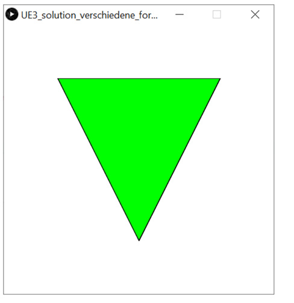

ÜBUNGSAUFGABEN
3.1 Leuchtender Kreis Level 1
Folgendes Programm erzeugt einen Mauszeiger in Form eines roten Kreises.
void setup(){
size(300, 300);
}
void draw() {
background(255);
fill(255, 0, 0);
circle(mouseX, mouseY, 20, 20);
}
Verändere das Programm derart, dass in der rechten Bildschirmhälfte der Mauszeiger ein grüner Kreis wird und in der linken wieder rot.
Interaktive Fläche:
3.2 Mauszeiger mit Formen Level 1
Verändere das Programm aus Aufgabe 3.1 derart, dass in der unteren Bildschirmhälfte der Mauszeiger zur grünen Box wird und in der oberen wieder zum roten Kreis.
Interaktive Fläche:
3.3 Verschiedene Formen Level 1
Verwende die Variable key, um verschiedene Formen zu
zeichnen.
if(key == 'r'){
...
}
if(key == 'b'){
}
Dein Programm soll Folgendes ausführen:
1. Wenn die Taste r gedrückt ist, dann zeichne einen roten Kreis

2. Wenn die Taste b gedrückt ist, dann zeichne ein blaues Quadrat.

3. Wenn die Taste g gedrückt ist, dann zeichne ein grünes Dreieck

4. Wenn die Taste x gedrückt ist, dann lösche alle bisherigen Formen (Befehl background).
3.4 Zeichenprogramm Level 2
In dieser Aufgabe soll ein Zeichenprogramm mit verschiedenen Farben erstellt werden. Starte mit folgender Grundstruktur:
void setup() {
size(800, 800);
background(0);
}
void draw() {
// Dein Code
}
Aufgabe
1. Es werden nur noch Kreise gezeichnet, wenn die Maustaste gedrückt
ist (mousePressed).
2. Mit den Keyboard-Tasten wird gewählt, in welcher Farbe als nächstes
gezeichnet wird (key).
-
Taste
r: rot
Taste b: blau
Taste g: grün
Tipp: Mit noStroke(); werden keine schwarzen
Umrandungen mehr angezeigt.
Interaktive Fläche:
3.5 Zusatzaufgabe Level 3
Finde heraus, wie sich die Form und Farbe des Mauszeigers in der interaktiven Fläche verändert.
Interaktive Fläche:
Schreibe ein Programm mit der gleichen Ausgabe.
Tipp:Wenn zwei Bedingungen gleichzeitig gelten kann man mit
&& (= UND) zwei Bedingungen verbinden:
if(xMouse < 100 && yMouse < 100){
...
}